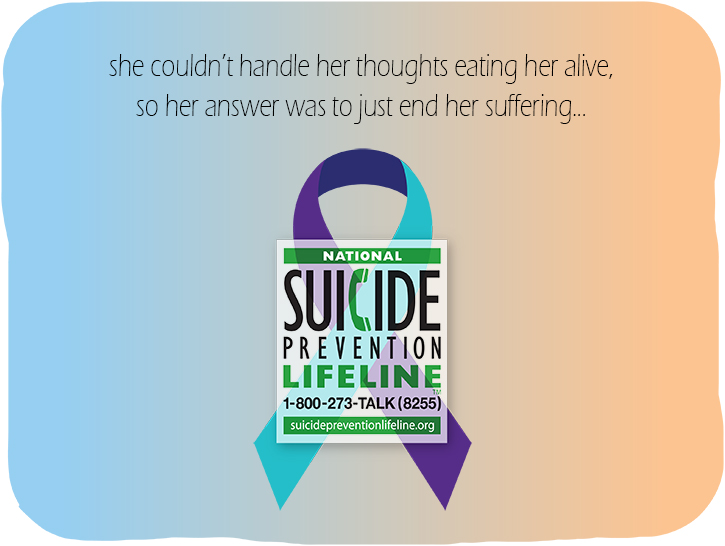

Some people in the LGBTQ+ community feel this way that it isn't fair for them to locked away in their thoughts.
Not only should you help prevent people from giving up their life, but also help people in the LGBTQ+ community find their voice.
. . .